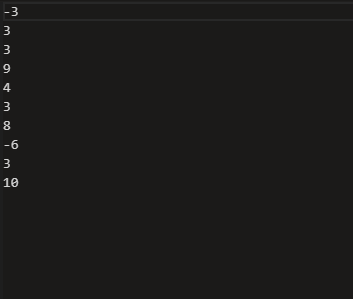

1. félév
Elektrotechnika
Az Elektrotechnika tantárgy során mélyebb betekintést nyertem az elektromos rendszerek működésébe és azok alapvető elveibe. A tantárgy segített abban, hogy jobban megértsem az áramkörök és elektronikai eszközök tervezését, valamint alkalmazzam ezeket a gyakorlatban.
Mikrovezérlő programozás
A Mikrovezérlő programozás tantárgy során elsajátítottam a mikrovezérlők működését és programozási alapjait, amelyek lehetővé tették, hogy komplex rendszereket irányítsak és automatizáljak. A tantárgy segített abban, hogy mélyebb megértést nyerjek a hardver és szoftver közötti kapcsolatokról, miközben gyakorlati tapasztalatot szereztem a mikrovezérlők programozásában.
2. félév
Programozás alapjai
A Programozás alapjai tantárgy során megtanultam a programozási nyelvek alapvető szintaxisát és logikai struktúráit, amelyek nélkülözhetetlenek a sikeres kódoláshoz. A tantárgy segített abban, hogy fejlesszem problémamegoldó készségeimet, és megerősítette a magabiztosságomat a programozás alapjainak alkalmazásában.
Digitális áramkörök
A Digitális áramkörök tantárgy során alaposan megismertem a logikai áramkörök felépítését és működését, valamint azok alkalmazásait az elektronikai rendszerekben. A tantárgy segített abban, hogy jobban megértsem a digitális áramkörök tervezését és az alapvető elveiket, amelyek a modern technológiák alapját képezik.